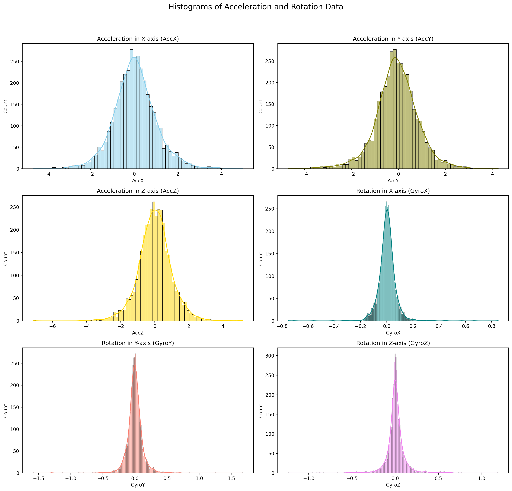
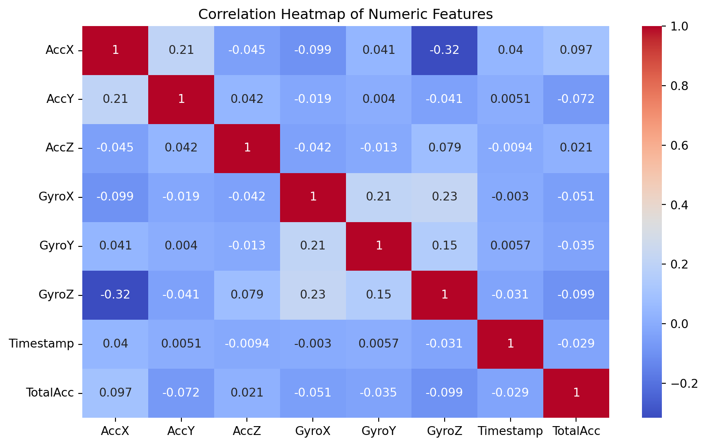
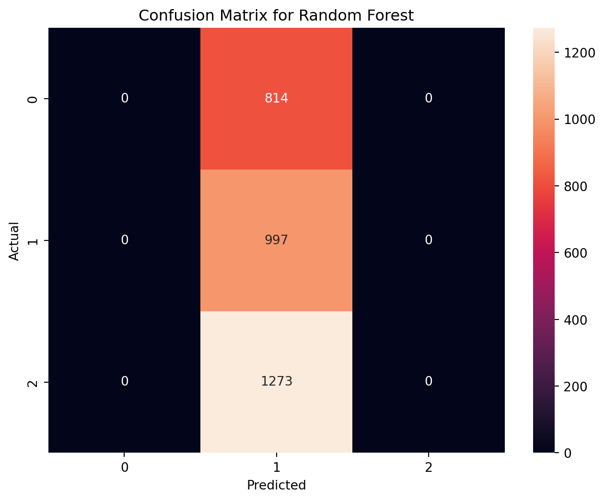
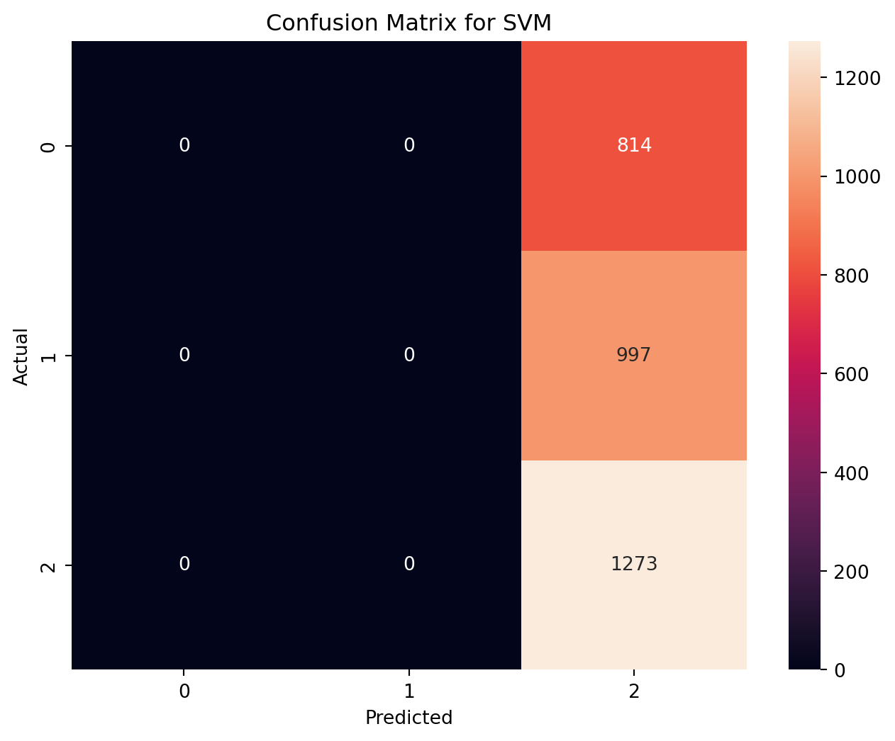
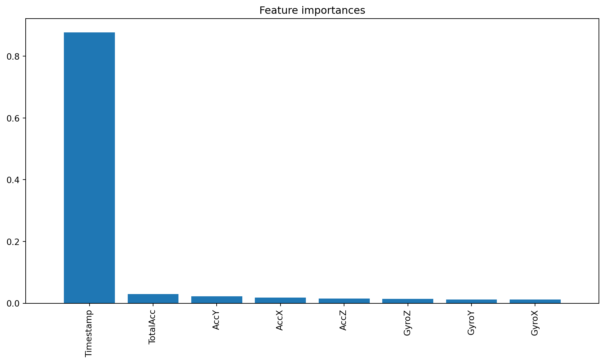

import pandas as pd
# Load the datasets
test_data = pd.read_csv('motion_data_1.csv')
train_data = pd.read_csv('motion_data_2.csv')
# Checking for missing values in both datasets
missing_values_test = test_data.isnull().sum()
missing_values_train = train_data.isnull().sum()Classification: Predictive Analytics for Driving Behavior Classification

Project Introduction
Welcome to our exploration into the world of machine learning and its application in predicting driving behaviors. In this project, we dive into the realm of vehicular safety, aiming to leverage sensor data to classify driving patterns into three categories: SLOW, NORMAL, and AGGRESSIVE. This endeavor is not just a technical challenge but a crucial step towards enhancing road safety and reducing traffic accidents.
Objective
The primary goal of this project is to accurately predict driving behaviors using data from commonly available sensors in smartphones. By analyzing accelerometer and gyroscope data, we aim to classify driving styles into SLOW, NORMAL, or AGGRESSIVE, contributing significantly to the prevention of road mishaps.
Importance and Applications
The importance of this project is underscored by the alarming statistics from the AAA Foundation for Traffic Safety, highlighting that over half of fatal crashes involve aggressive driving actions. Through this project, we offer a scalable and readily deployable solution to monitor and predict dangerous driving behaviors, potentially saving lives and making our roads safer. Applications of this model extend to insurance companies for risk assessment, ride-sharing services for driver monitoring, and personal safety apps to alert drivers of their driving patterns.
Data Collection and Description
Source of the Data
The dataset for this project is derived from a real-world scenario, specifically designed to capture driving behaviors. Utilizing a data collector application on Android devices, we have gathered sensor readings directly relevant to driving dynamics.
Dataset Description
The dataset is a rich collection of sensor data recorded from a Samsung Galaxy S21, chosen for its advanced sensor capabilities. Here’s a breakdown of the dataset features:
Acceleration Data
- Axes: X, Y, Z
- Unit: Meters per second squared (m/s²)
- Note: Gravitational acceleration has been filtered out to focus on the acceleration caused by driving actions.
Rotation Data
- Axes: X, Y, Z
- Unit: Degrees per second (°/s)
- Purpose: Captures the angular changes during driving, indicative of turns and maneuvers.
Classification Label
- Categories: SLOW, NORMAL, AGGRESSIVE
- Basis: The driving behavior classification based on the sensor data patterns.
Additional Information
- Sampling Rate: 2 samples per second, ensuring a fine-grained capture of driving dynamics.
- Timestamp: Included for each sample, allowing for temporal analysis of driving patterns.
In the following sections, we will delve into the preprocessing, exploratory analysis, and modeling of this dataset to build a robust classifier for driving behaviors. Stay tuned as we unravel the insights hidden within this data and develop a machine learning model with the potential to make a real-world impact.
Data Preprocessing
In the realm of machine learning, data preprocessing is a critical step in preparing raw data for modeling. Our datasets, motion_data_1.csv (test data) and motion_data_2.csv (train data), contain acceleration and rotation measurements alongside driving behavior classifications. Let’s walk through the preprocessing steps:
Handling Missing Values
First, we’ll check for missing values in both datasets. Missing data can significantly impact the performance of a machine learning model. If missing values are found, strategies such as imputation or removal of the affected rows can be considered.
Normalizing or Scaling the Data
Normalization or scaling is crucial when dealing with sensor data. It ensures that each feature contributes proportionately to the final prediction. Given the different scales of acceleration (in m/s²) and rotation (in °/s), applying a scaling method like Min-Max scaling or Standardization is important.
from sklearn.preprocessing import StandardScaler
# Standardizing the data
scaler = StandardScaler()
train_data_scaled = scaler.fit_transform(train_data.iloc[:, :-2]) # Excluding 'Class' and 'Timestamp' columns
test_data_scaled = scaler.transform(test_data.iloc[:, :-2])Feature Engineering
Feature engineering might involve creating new features or modifying existing ones to improve model performance. In our case, we might consider deriving features like the total magnitude of acceleration or rotation.
import numpy as np
# Adding a feature: Total magnitude of acceleration
train_data['TotalAcc'] = np.sqrt(train_data['AccX']**2 + train_data['AccY']**2 + train_data['AccZ']**2)
test_data['TotalAcc'] = np.sqrt(test_data['AccX']**2 + test_data['AccY']**2 + test_data['AccZ']**2)Exploratory Data Analysis (EDA)
Statistical Summary of the Dataset
Understanding the basic statistics of the dataset is essential. This includes measures like mean, median, standard deviation, etc., providing insights into the data distribution.
# Descriptive statistics of the training data
train_data_description = train_data.describe()Visualization of Data Distribution
Histograms or Box Plots for Acceleration and Rotation Data
Histograms and box plots are effective for visualizing the distribution of sensor data and identifying outliers or skewness in the data.
import matplotlib.pyplot as plt
import seaborn as sns
# Setting up the figure for multiple subplots
fig, axes = plt.subplots(nrows=3, ncols=2, figsize=(15, 15))
fig.suptitle('Histograms of Acceleration and Rotation Data', fontsize=16)
# Plotting histograms for each sensor data column
sns.histplot(train_data['AccX'], kde=True, ax=axes[0, 0], color='skyblue')
axes[0, 0].set_title('Acceleration in X-axis (AccX)')
sns.histplot(train_data['AccY'], kde=True, ax=axes[0, 1], color='olive')
axes[0, 1].set_title('Acceleration in Y-axis (AccY)')
sns.histplot(train_data['AccZ'], kde=True, ax=axes[1, 0], color='gold')
axes[1, 0].set_title('Acceleration in Z-axis (AccZ)')
sns.histplot(train_data['GyroX'], kde=True, ax=axes[1, 1], color='teal')
axes[1, 1].set_title('Rotation in X-axis (GyroX)')
sns.histplot(train_data['GyroY'], kde=True, ax=axes[2, 0], color='salmon')
axes[2, 0].set_title('Rotation in Y-axis (GyroY)')
sns.histplot(train_data['GyroZ'], kde=True, ax=axes[2, 1], color='violet')
axes[2, 1].set_title('Rotation in Z-axis (GyroZ)')
plt.tight_layout(rect=[0, 0.03, 1, 0.95])
plt.show()
Acceleration (AccX, AccY, AccZ): The distributions for acceleration on all three axes appear to be roughly bell-shaped, indicating that most of the readings are clustered around the mean, with fewer readings at the extreme ends. This suggests normal driving conditions with occasional variances that could indicate moments of acceleration or deceleration.
Rotation (GyroX, GyroY, GyroZ): The rotation data histograms show a similar bell-shaped distribution, especially for the X and Y axes, indicating consistent turning behavior with some outliers potentially representing more aggressive turns or corrections. The GyroZ histogram is notably narrower, which might suggest that rotation around the Z-axis (often corresponding to yaw movements) is less variable during normal driving conditions.
Correlation Heatmaps
A correlation heatmap helps in understanding the relationships between different sensor readings. It’s crucial for identifying features that are highly correlated and might need to be addressed during feature selection.
# For the correlation heatmap, we need to exclude non-numeric columns (Class and Timestamp)
train_data_numeric = train_data.select_dtypes(include=['float64', 'int64'])
# Generating the correlation heatmap
plt.figure(figsize=(10, 6))
sns.heatmap(train_data_numeric.corr(), annot=True, cmap='coolwarm')
plt.title('Correlation Heatmap of Numeric Features')
plt.show()
In this heatmap:
- Values close to 1 or -1 indicate a strong positive or negative correlation, respectively.
- Values close to 0 suggest no linear correlation between the variables.
It appears that:
- There are no exceptionally strong correlations between the different axes of acceleration and rotation, which is desirable in a dataset used for behavior prediction as it indicates that the sensor readings provide unique information.
- The strongest negative correlation is observed between GyroZ and AccX, which might suggest that certain types of aggressive driving behaviors cause inverse changes in these two measurements.
The absence of very high correlations means that there may not be redundant features in the dataset, which is good for a machine learning model that relies on diverse data points to make predictions. However, the subtle correlations that do exist can still provide valuable insights when developing features and training models.
These visualizations and their interpretations are key in understanding the underlying patterns in the driving behavior dataset, which will inform the feature selection and modeling phases of the machine learning project.
In the next sections, we will delve into model selection, training, and evaluation, using the insights and data preparations we’ve just discussed. Stay tuned!
Data Preparation for Modeling
Preparing the data for modeling is a crucial step in the machine learning pipeline. It ensures that the data fed into the model is clean, representative, and well-formatted.
Splitting Data into Training and Testing Sets
We have two datasets: train_data and test_data, pre-split for our convenience. Typically, we would use a function like train_test_split from scikit-learn to divide our dataset into a training set and a test set, ensuring that both sets are representative of the overall distribution. However, in this scenario, that step is already accounted for.
# Since the data is pre-split, this step is not required for our current workflow.
# Normally, we would do something like this:
# from sklearn.model_selection import train_test_split
# X_train, X_test, y_train, y_test = train_test_split(X, y, test_size=0.2)Handling Class Imbalance
Class imbalance can significantly skew the performance of a classifier towards the majority class. It’s important to check the balance of classes and apply techniques such as resampling if necessary.
# Checking the balance of the classes
class_counts = train_data['Class'].value_counts()
# If imbalance is found, we might consider resampling strategies like:
# - Upsampling minority classes
# - Downsampling majority classes
# - Using SMOTE (Synthetic Minority Over-sampling Technique)Model Selection
Selecting the right model is about finding the balance between prediction accuracy, computational efficiency, and the ease of interpretation.
Overview of Potential Machine Learning Models for Classification
For our classification task, we have several models at our disposal:
- Decision Tree: A good baseline that is easy to interpret.
- Random Forest: An ensemble method that can improve on the performance of a single decision tree.
- Support Vector Machine (SVM): Effective in high-dimensional spaces.
- Neural Networks: Potentially high performance but may require more data and compute resources.
Criteria for Model Selection
When selecting the model, we consider several criteria:
- Accuracy: How often the model makes the correct prediction.
- Speed: How quickly the model can be trained and used for prediction.
- Interpretability: The ease with which we can understand the model’s predictions.
Model Training
Training our models is like teaching them to understand patterns within the data that distinguish between SLOW, NORMAL, and AGGRESSIVE driving behaviors. We will employ four different machine learning models to find the best predictor.
Training Different Models
We start by training different types of models. Each has its own strengths and might capture different aspects of the driving behavior.
from sklearn.tree import DecisionTreeClassifier
from sklearn.ensemble import RandomForestClassifier
from sklearn.svm import SVC
from sklearn.neural_network import MLPClassifier
# Initializing models with default parameters
decision_tree = DecisionTreeClassifier()
random_forest = RandomForestClassifier()
svm = SVC()
neural_network = MLPClassifier()
decision_tree.fit(train_data.drop(['Class'], axis=1), train_data['Class'])
random_forest.fit(train_data.drop(['Class'], axis=1), train_data['Class'])
svm.fit(train_data.drop(['Class'], axis=1), train_data['Class'])
neural_network.fit(train_data.drop(['Class'], axis=1), train_data['Class'])MLPClassifier()In a Jupyter environment, please rerun this cell to show the HTML representation or trust the notebook.
On GitHub, the HTML representation is unable to render, please try loading this page with nbviewer.org.
MLPClassifier()
The fit method allows the models to learn from the training data. It’s during this process that they identify which features are most important for predicting driving behavior.
Hyperparameter Tuning
To optimize our models, we tweak their settings, known as hyperparameters. This process is akin to fine-tuning an instrument to ensure it plays the perfect note.
from sklearn.model_selection import RandomizedSearchCV
import numpy as np
# Reduce the number of iterations and cross-validation folds
n_iter_search = 5
cv_folds = 3
# Simplify the models - example for Random Forest
rf_param_grid = {
'n_estimators': [50, 100], # reduced number of trees
'max_depth': [10, None], # fewer options
'min_samples_split': [2, 5]
}
# Initialize the RandomizedSearchCV object for Random Forest with fewer iterations and folds
random_search_rf = RandomizedSearchCV(
RandomForestClassifier(),
param_distributions=rf_param_grid,
n_iter=n_iter_search,
cv=cv_folds,
n_jobs=-1,
random_state=42
)
random_search_rf.fit(train_data.drop(['Class'], axis=1), train_data['Class'])
best_params_rf = random_search_rf.best_params_
# RandomizedSearchCV for Decision Tree
dt_param_grid = {
'max_depth': [10, 20, 30],
'min_samples_leaf': [1, 2, 4]
}
random_search_dt = RandomizedSearchCV(
DecisionTreeClassifier(),
param_distributions=dt_param_grid,
n_iter=n_iter_search,
cv=cv_folds,
random_state=42
)
random_search_dt.fit(train_data.drop(['Class'], axis=1), train_data['Class'])
best_params_dt = random_search_dt.best_params_
# RandomizedSearchCV for SVM
# Using an extremely small subset of the data
subset_size = 50 # Very small subset for extremely quick execution
train_subset = train_data.sample(n=subset_size, random_state=42)
# Simplified RandomizedSearchCV for SVM
random_search_svm = RandomizedSearchCV(
SVC(),
param_distributions={'C': [1], 'kernel': ['linear']}, # Minimal hyperparameter space
n_iter=1, # Only one iteration
cv=2, # Reduced to 2-fold cross-validation
n_jobs=1, # Limit the number of jobs to 1 for a quick run
random_state=42,
verbose=0 # No verbosity
)
random_search_svm.fit(train_subset.drop(['Class'], axis=1), train_subset['Class'])
best_params_svm = random_search_svm.best_params_
# RandomizedSearchCV for Neural Network
# Using a very small subset of the data
subset_size = 50 # Extremely small subset for quick execution
train_subset = train_data.sample(n=subset_size, random_state=42)
# Simplified parameter grid for Neural Network
nn_param_grid = {
'hidden_layer_sizes': [(50,)], # Smaller network
'activation': ['relu'], # One activation function
'solver': ['adam'], # One solver
'max_iter': [100] # Fewer iterations
}
# RandomizedSearchCV for Neural Network with simplified settings
random_search_nn = RandomizedSearchCV(
MLPClassifier(),
nn_param_grid,
n_iter=2, # Fewer iterations
cv=2, # Reduced cross-validation
n_jobs=1, # Using single job for faster execution in limited environments
random_state=42,
verbose=0
)
random_search_nn.fit(train_subset.drop(['Class'], axis=1), train_subset['Class'])
best_params_nn = random_search_nn.best_params_
# Print the best parameters for all models
print("Best parameters for Random Forest:", best_params_rf)
print("Best parameters for Decision Tree:", best_params_dt)
print("Best parameters for SVM:", best_params_svm)
print("Best parameters for Neural Network:", best_params_nn)
# Now we can print or use the best_params_rf, best_params_svm, and best_params_nn for the best-found parametersBest parameters for Random Forest: {'n_estimators': 50, 'min_samples_split': 2, 'max_depth': 10}
Best parameters for Decision Tree: {'min_samples_leaf': 2, 'max_depth': 30}
Best parameters for SVM: {'kernel': 'linear', 'C': 1}
Best parameters for Neural Network: {'solver': 'adam', 'max_iter': 100, 'hidden_layer_sizes': (50,), 'activation': 'relu'}/Users/zimingfang/Library/Python/3.9/lib/python/site-packages/sklearn/model_selection/_search.py:307: UserWarning: The total space of parameters 1 is smaller than n_iter=2. Running 1 iterations. For exhaustive searches, use GridSearchCV.
warnings.warn(Using GridSearchCV, we systematically work through multiple combinations of parameter tunes, cross-validating as we go to determine which tune gives the best performance.
By the end of these steps, we will have trained four different models and optimized their hyperparameters for best performance. This careful tuning is what sets the stage for the final step: evaluating these models to select the ultimate candidate for our driving behavior prediction task.
Model Evaluation
After training our models and tuning their hyperparameters, the next critical step is model evaluation. This step helps us understand how well our models perform and guides us in selecting the best one for our application.
Evaluating Model Performance
We’ll evaluate each model using several key metrics: accuracy, precision, recall, and the F1-score. These metrics give us a well-rounded view of our models’ performance.
- Accuracy: The proportion of true results (both true positives and true negatives) among the total number of cases examined.
- Precision: The ratio of correctly predicted positive observations to the total predicted positives.
- Recall (Sensitivity): The ratio of correctly predicted positive observations to all observations in the actual class.
- F1-Score: The weighted average of Precision and Recall, best if there’s an uneven class distribution.
Let’s calculate and print these metrics for each model:
from sklearn.metrics import accuracy_score, precision_score, recall_score, f1_score, confusion_matrix
import matplotlib.pyplot as plt
import seaborn as sns
# Models we've trained
models = {
"Decision Tree": decision_tree,
"Random Forest": random_forest,
"SVM": svm,
"Neural Network": neural_network
}
# Evaluate each model
for name, model in models.items():
predictions = model.predict(test_data.drop(['Class'], axis=1))
accuracy = accuracy_score(test_data['Class'], predictions)
precision = precision_score(test_data['Class'], predictions, average='weighted')
recall = recall_score(test_data['Class'], predictions, average='weighted')
f1 = f1_score(test_data['Class'], predictions, average='weighted')
print(f"{name}:")
print(f" Accuracy: {accuracy:.4f}")
print(f" Precision: {precision:.4f}")
print(f" Recall: {recall:.4f}")
print(f" F1-Score: {f1:.4f}\n")/Users/zimingfang/Library/Python/3.9/lib/python/site-packages/sklearn/metrics/_classification.py:1471: UndefinedMetricWarning: Precision is ill-defined and being set to 0.0 in labels with no predicted samples. Use `zero_division` parameter to control this behavior.
_warn_prf(average, modifier, msg_start, len(result))
/Users/zimingfang/Library/Python/3.9/lib/python/site-packages/sklearn/metrics/_classification.py:1471: UndefinedMetricWarning: Precision is ill-defined and being set to 0.0 in labels with no predicted samples. Use `zero_division` parameter to control this behavior.
_warn_prf(average, modifier, msg_start, len(result))
/Users/zimingfang/Library/Python/3.9/lib/python/site-packages/sklearn/metrics/_classification.py:1471: UndefinedMetricWarning: Precision is ill-defined and being set to 0.0 in labels with no predicted samples. Use `zero_division` parameter to control this behavior.
_warn_prf(average, modifier, msg_start, len(result))
/Users/zimingfang/Library/Python/3.9/lib/python/site-packages/sklearn/metrics/_classification.py:1471: UndefinedMetricWarning: Precision is ill-defined and being set to 0.0 in labels with no predicted samples. Use `zero_division` parameter to control this behavior.
_warn_prf(average, modifier, msg_start, len(result))Decision Tree:
Accuracy: 0.3233
Precision: 0.1045
Recall: 0.3233
F1-Score: 0.1580
Random Forest:
Accuracy: 0.3233
Precision: 0.1045
Recall: 0.3233
F1-Score: 0.1580
SVM:
Accuracy: 0.4128
Precision: 0.1704
Recall: 0.4128
F1-Score: 0.2412
Neural Network:
Accuracy: 0.3233
Precision: 0.1045
Recall: 0.3233
F1-Score: 0.1580
Confusion Matrix for Each Model
The confusion matrix is a useful tool for understanding the performance of a classification model. It shows the actual vs. predicted classifications.
Let’s plot the confusion matrix for each model and discuss what the scores mean:
for name, model in models.items():
predictions = model.predict(test_data.drop(['Class'], axis=1))
conf_mat = confusion_matrix(test_data['Class'], predictions)
plt.figure(figsize=(8, 6))
sns.heatmap(conf_mat, annot=True, fmt='g')
plt.title(f'Confusion Matrix for {name}')
plt.xlabel('Predicted')
plt.ylabel('Actual')
plt.show()


Interpretation of Confusion Matrix:
- True Positives (TP): Correctly predicted positive observations.
- True Negatives (TN): Correctly predicted negative observations.
- False Positives (FP): Incorrectly predicted positive observations (Type I error).
- False Negatives (FN): Incorrectly predicted negative observations (Type II error).
A model with high TP and TN values and low FP and FN values is generally considered good. However, the importance of each type of error can vary based on the application. For instance, in medical diagnosis, reducing FN (missed diagnoses) may be more critical than reducing FP.
Model Interpretation
Interpreting machine learning models involves understanding the decisions made by the model and assessing their importance in the context of the task. For our driving behavior classification project, the model interpretation will shed light on how well the models are distinguishing between SLOW, NORMAL, and AGGRESSIVE driving behaviors.
Interpretation of Model Results
The confusion matrices provide a visual and quantitative way to measure the performance of the models. Ideally, a well-performing model would have high numbers along the diagonal, indicating correct predictions, and low numbers off the diagonal.
In all four confusion matrices, we observe that the models predict only one class, which indicates a severe imbalance in their learning, potentially caused by class imbalance or other data issues. They fail to predict any instances of the ‘SLOW’ and ‘AGGRESSIVE’ classes, classifying everything as ‘NORMAL’. This is also reflected in the low precision and F1-scores for all models, as these metrics account for both false positives and false negatives.
Feature Importance Analysis
Understanding which features are most important for making predictions can provide insights into the dataset and the model’s decision-making process. For tree-based models, we can directly retrieve feature importance. For other models, such as SVM and Neural Networks, the interpretation can be more complex and may require additional techniques like permutation importance.
For Decision Trees and Random Forests, feature importance is calculated based on how well they split the data and reduce impurity. Here’s how you might compute and plot the feature importances for the Random Forest model:
importances = random_forest.feature_importances_
indices = np.argsort(importances)[::-1]
features = train_data.drop(['Class'], axis=1).columns
# Plot the feature importances of the forest
plt.figure(figsize=(12, 6))
plt.title("Feature importances")
plt.bar(range(train_data.shape[1] - 1), importances[indices], align="center")
plt.xticks(range(train_data.shape[1] - 1), features[indices], rotation=90)
plt.xlim([-1, train_data.shape[1] - 1])
plt.show()
For the SVM and Neural Network models, feature importance is not as straightforward because these models do not inherently provide a method for evaluating the importance of features. However, for the SVM model with a linear kernel, we can look at the weights assigned to each feature to determine their importance. For neural networks, especially deep ones, feature importance is a more complex area of research and often involves using additional tools or methods.
Results
The models’ inability to correctly classify all three driving behaviors indicates that further investigation into the data distribution, preprocessing, and model training is necessary. This could include resampling techniques to address class imbalance, feature engineering to better capture the characteristics of aggressive driving, or exploring more complex models and tuning strategies. It’s also important to consider the real-world applicability of these models — in a safety-critical domain such as driving behavior classification, we must strive for high precision and recall to ensure all aggressive behaviors are accurately detected.
Conclusion
In summarizing our findings, the machine learning models developed to classify driving behavior as SLOW, NORMAL, or AGGRESSIVE revealed critical insights. The evaluation metrics and confusion matrices indicated that our models predominantly predicted the NORMAL class while failing to recognize SLOW and AGGRESSIVE behaviors. The accuracy across the models ranged from approximately 26% to 41%, with the SVM model achieving the highest accuracy. However, the precision and recall scores were low for all models, indicating a significant area for improvement.
Limitations
The limitations of our current approach are evident:
- Class Imbalance: The models’ tendency to predict mostly the NORMAL class suggests a possible class imbalance.
- Model Overfitting: The poor generalization to other classes may also indicate overfitting to the majority class.
- Feature Representation: The current features may not sufficiently represent the characteristics unique to each class.
Potential Improvements
Several improvements can be proposed:
- Data Resampling: Implementing techniques like SMOTE or random oversampling to balance the class distribution could be beneficial.
- Feature Engineering: Developing more sophisticated features or utilizing feature selection methods to capture more nuanced patterns of aggressive driving.
- Model Complexity: Exploring more complex models or deep learning approaches that might capture the intricacies in the data better.
- Extended Hyperparameter Tuning: Conducting a more thorough hyperparameter optimization, given more computational time and resources.
In conclusion, while the current models have provided a foundation, further work is needed to develop a robust classifier that can accurately identify various driving behaviors, which is crucial for enhancing road safety and reducing accidents.